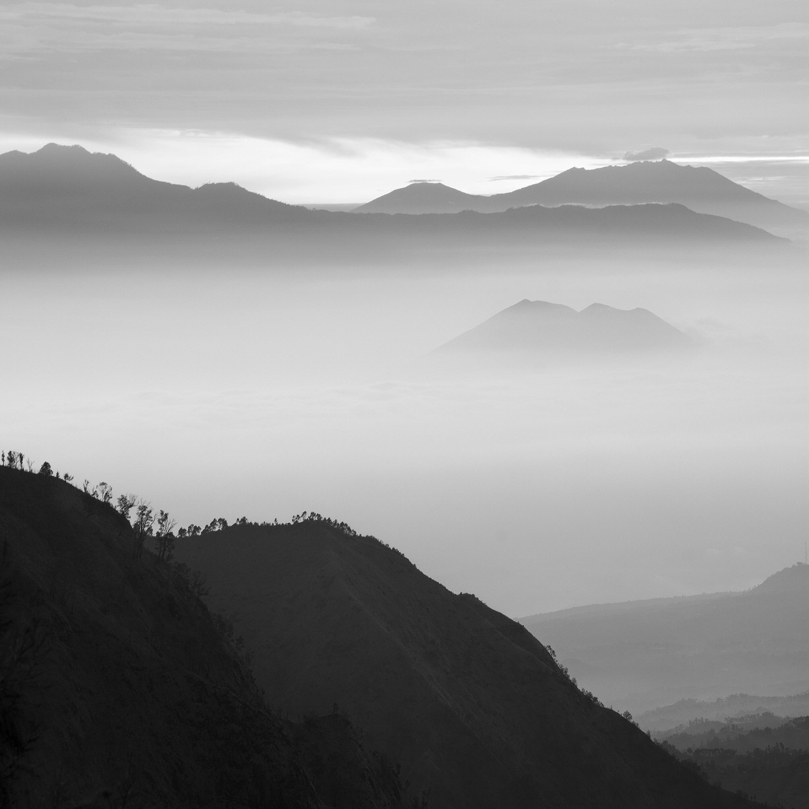
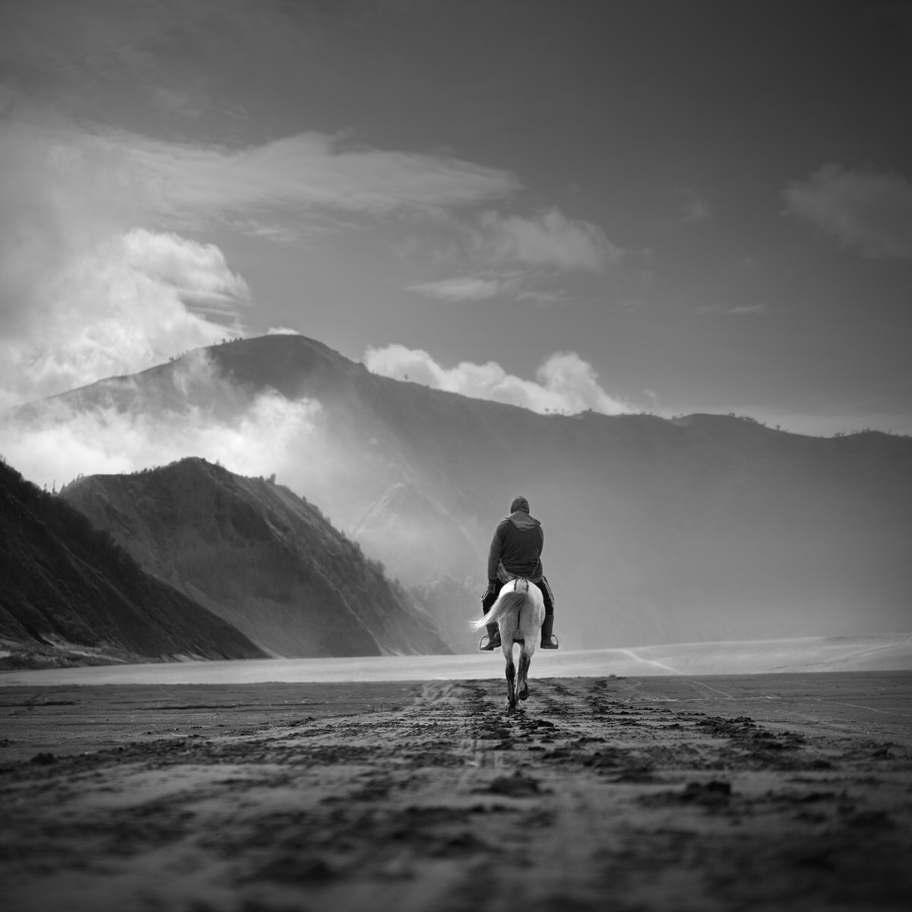
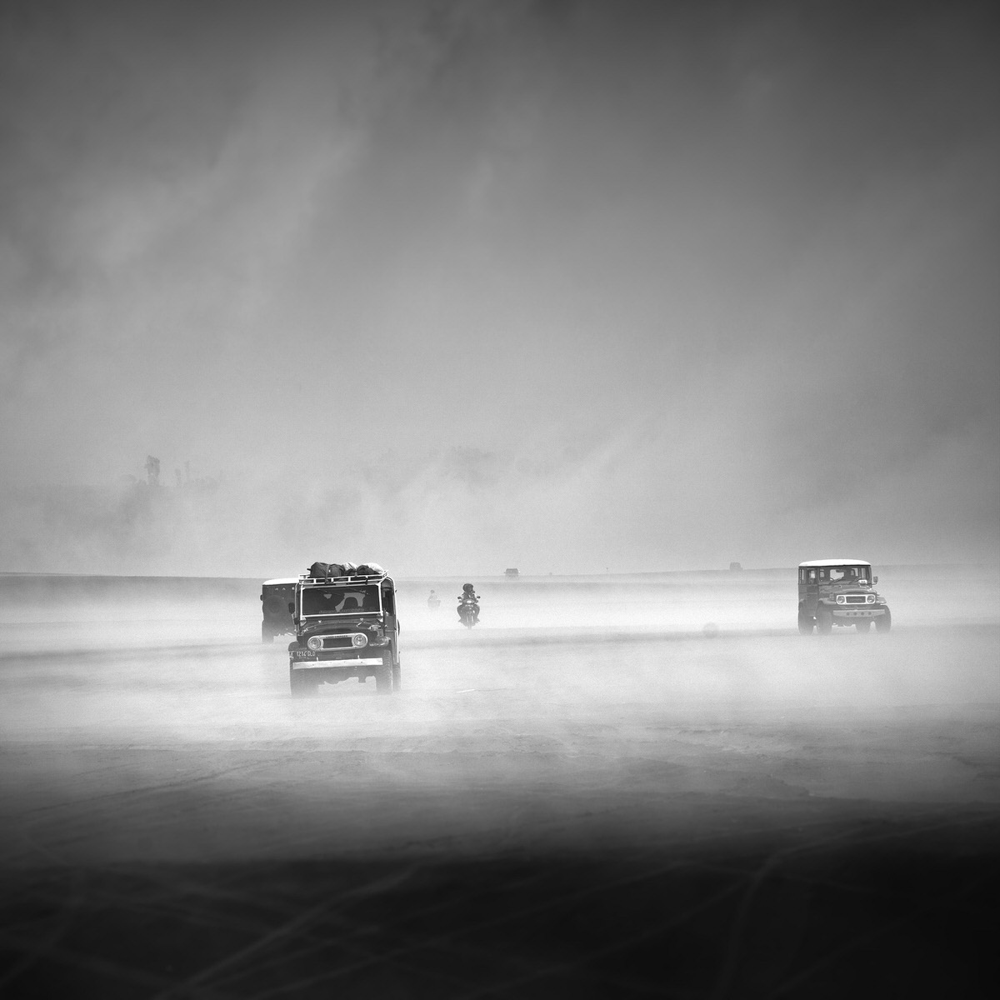
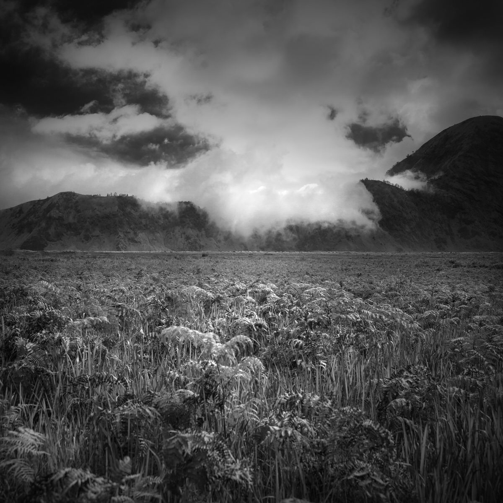

Sunrise di Penanjakan
Bukit Penanjakan atau Puncak Penanjakan merupakan spot tertinggi untuk menyaksikan matahari
terbit ke arah Lautan Pasir Bromo atau Kaldera Tengger. Di titik itu, wisatawan juga dapat
menyaksikan keanggunan Gunung Bromo, Gunung Semeru, dan Gunung Batok.

Berkuda Di Lautan Pasir
Wisata Gunung Bromo yang paling utama adalah lautan pasirnya yang membentang luas di
sekeliling kawah Bromo, mengepulkan asap putih. Bentuk tubuh Gunung Bromo bertautan antara
lembah dan ngarai dengan kaldera atau lautan pasir yang terhampar dengan luas mencapai 10
kilometer persegi.

Jelajah Lautan Pasir
Tak hanya berkuda, di Lautan Pasir Bromo anda juga bisa menyewa mobil jeep untuk berkeliling.
Destinasi wisata di sekitar bromo bisa dengan mudah anda capai menggunakan kendaraan ini.
Contohnya Bukit Kedaluh, Bukit Cinta, Bukit Mentingen, dan Padang Savana Teletubbies.

Savana Teletubbies Bromo
Padang rumput atau sabana Teletubbies masih berada di wilayah Kabupaten Probolinggo, namun
lebih dekat dengan wilayah Kabupaten Malang. Sabana Teletubbies paling cocok bagi wisatawan
yang menyukai suasana tenang dan alami. Letak padang rumput seluas sekitar 382 hektare ini
agak terpencil dan hening.
